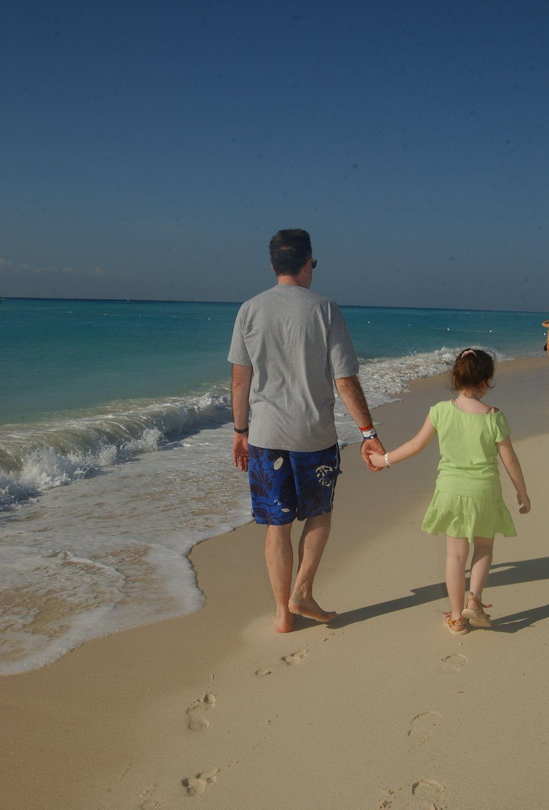

Playa del Carmen · Quintana Roo, Mexico · 2005
Mexico · Quintana Roo
There is a particular quality of light on the Caribbean coast of the Yucatán — blue beyond what seems reasonable, laid over water so shallow and white-bottomed that the sea glows from within. It is the kind of light that makes every moment feel slightly more permanent than it is.
This photograph was taken in 2005 on the beach at Playa del Carmen, walking the shoreline with Anna Christine O'Brien. The waves are gentle, the sand is white as chalk, and the footprints trailing behind them belong to a morning that will not come again — which is precisely why it was worth photographing.
Some journeys are about the destination. Some are about who you take with you.
Context & Chronicle
Long before the resort hotels and the ferry to Cozumel, this stretch of Caribbean coastline was Maya territory — and active, prosperous Maya territory at that. The ancient city of Xaman-Ha occupied the site of what is now Playa del Carmen, functioning as a staging point for ceremonial canoe voyages to the island of Cozumel, which was one of the most important pilgrimage sites in the Maya world. Women from across the Yucatán made the crossing to visit the shrine of Ix Chel, the goddess of the moon, medicine, and weaving.
The Spanish first encountered this coastline in 1517, when Francisco Hernández de Córdoba sailed north from Cuba and landed on Cozumel — naming it Santa Cruz de la Isla. Juan de Grijalva followed in 1518, and Hernán Cortés stopped here in 1519 on his way to the mainland conquest that would bring down the Aztec empire. The Yucatán Peninsula itself proved far more difficult to subdue than central Mexico; the Maya resisted for nearly two decades, and the Yucatán was not fully under Spanish control until 1546.
For most of the colonial and post-independence period, the site of Playa del Carmen was a minor fishing village and ferry landing — a place people passed through on their way to Cozumel, not a destination in its own right. It was not until the Mexican government began developing the Cancún resort corridor in the 1970s that the Riviera Maya began its transformation. Playa itself remained a small backpacker outpost through the 1980s; its rapid growth into a significant resort town came largely in the 1990s, accelerating dramatically after the opening of the Barceló Maya complex and the extension of Highway 307.
Beneath the flat limestone shelf of the Yucatán lies one of the largest underwater cave systems on Earth — a vast network of flooded passages and chambers connected to the sea and to the surface through openings called cenotes. For the ancient Maya, the cenotes were sacred entrances to Xibalba, the underworld, and offerings — including, at some sites, human sacrifices — were cast into them. Today the same passages are explored by cave divers; the Sistema Sac Actun and Sistema Ox Bel Ha near Playa del Carmen are among the longest mapped underwater cave systems ever discovered.
The water colour visible in this photograph — that improbable turquoise, almost tropical-fish-tank in its intensity — is a product of the Mesoamerican Barrier Reef, the second longest coral reef system in the world after Australia's Great Barrier Reef. Stretching more than 1,000 kilometres from the tip of the Yucatán to the Bay Islands of Honduras, the reef creates the shallow, protected lagoon conditions that produce the Caribbean's characteristic colour. Cozumel, visible on clear days from the beach at Playa, sits within the reef system and is considered one of the premier dive destinations on Earth.
The pedestrianised Fifth Avenue — Quinta Avenida — running parallel to the beach is the commercial and social spine of modern Playa del Carmen: taquerías alongside designer boutiques, mezcalerías next to souvenir shops, rooftop bars above cenote swimming holes. It is a street that has grown organically from backpacker hostel town to upscale international resort over the span of a single generation. In 2005, when this photograph was taken, that transformation was well underway but not yet complete — Playa was still a place where you could find a quiet stretch of beach in the morning, footprints and all.
"The Caribbean has a way of making the present tense feel extremely present — the water too blue, the sand too white, the light too clear for anything other than full attention."
The beach at Playa del Carmen runs almost perfectly north-south, which means the morning light comes in from the east across the water — flat, warm, and almost horizontal in the early hours, throwing long shadows across the sand and lighting the underside of every breaking wave. The footprints in this photograph were made in that light, in those first unhurried hours of a morning that, twenty years on, is still entirely visible.
The colour of the water is worth a small digression. The Caribbean's extraordinary blue-green palette is not simply a matter of tropical sunshine. The Yucatán's shallow, reef-sheltered coastal shelf means that sunlight reaches the white limestone seafloor and reflects back upward through the water column, producing a luminosity that is genuinely different from what you see in deeper, darker seas. The Ancient Maya would not have had the physics of light scattering to explain it, but they clearly understood that this coastline was something apart — which is why they built their pilgrimage shrines here, and why the priests of Ix Chel chose Cozumel as her sacred island.
There is a version of travel that is about accumulation — stamps in a passport, photographs of monuments, lists of restaurants visited. And then there is this version: a father and a small girl, hand in hand, walking at the edge of the sea. The monument is the morning itself. The photograph is just evidence that it happened.